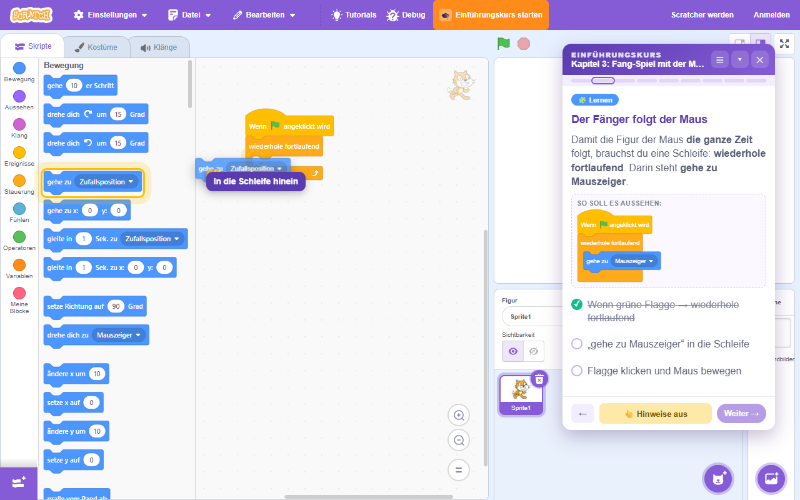
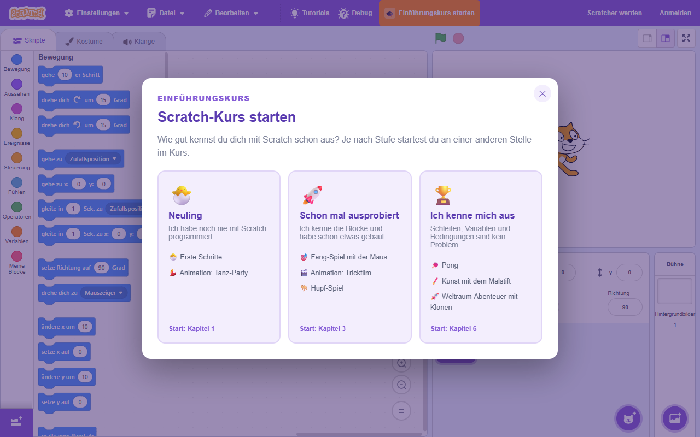
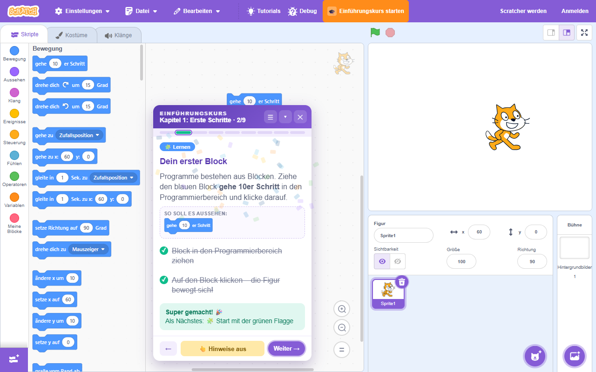
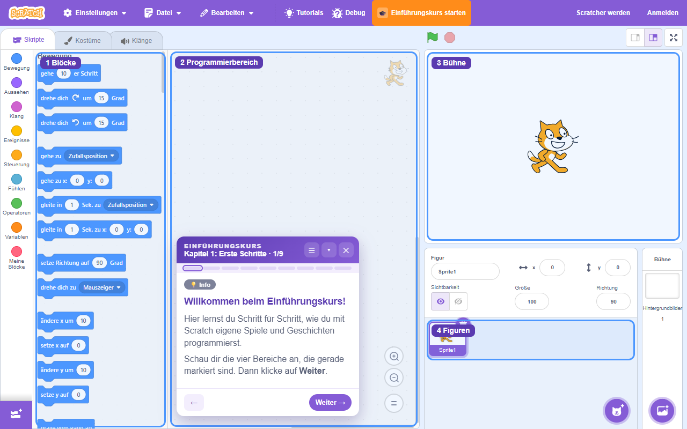
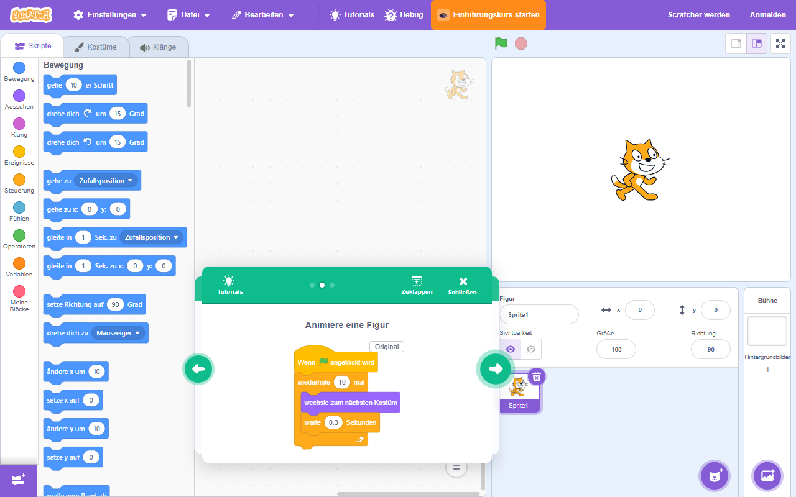

Einführungskurs für Scratch
Deutsche Scratch-Tutorials und ein geführter Programmierkurs für Kinder von 8 bis 14 – direkt im Scratch-Editor. Für Schule, AG und Zuhause.
Für Brave, Chrome und Edge · Open Source (MIT) · ohne Anmeldung
Warum diese Erweiterung?
Die eingebauten Scratch-Tutorials zeigen ihre Blöcke immer auf Englisch – auch wenn der Editor auf Deutsch steht. Für Kinder, die gerade erst sicher lesen, ist das eine echte Hürde. Und wer einen Kurs gibt, braucht einen roten Faden vom ersten Block bis zum eigenen Spiel.
Deutsche Tutorials
96 Tutorial-Bilder von Scratch zeigen deutsche statt englischer Blöcke. Mit einem Klick zurück zum Original.
Geführter Kurs
8 Kapitel, 68 Schritte – vom ersten Block bis zu Klonen und eigenen Blöcken.
Zeige-Hinweise
Eine animierte Hand und fliegende Blöcke zeigen, wo geklickt und wohin gezogen wird.
Automatisch abgehakt
Die Erweiterung erkennt selbst, ob die Blöcke richtig sitzen – und feiert mit Konfetti.
Drei Einstiegsstufen
Neuling, Schon mal ausprobiert, Ich kenne mich aus. Alle Kapitel bleiben jederzeit erreichbar.
Datenschutzfreundlich
Kein Konto, kein Server, keine Datenübertragung. Der Fortschritt bleibt im Browser.
So sieht es aus
Der Kurs läuft in einem kleinen Fenster direkt im Scratch-Editor. Die Kinder bauen ihre Projekte selbst – der Kurs zeigt den Weg.




Die 8 Kapitel
Jedes Kapitel führt zu einem eigenen, fertigen Projekt und endet mit einer Kreativ-Aufgabe, in der die Kinder es zu ihrem eigenen machen.
1 · Erste Schritte
Oberfläche, Blöcke ziehen, grüne Flagge, Sprechen, Figuren und Hintergründe, Pfeiltasten, Zwischenspiel „Klick-Jagd“
2 · Tanz-Party
Kostüme und Daumenkino-Prinzip, Wiederholen, Warten, Musik in Schleifen, Grafikeffekte
3 · Fang-Spiel mit der Maus
Endlosschleife, falls/dann, Berührung, Variablen, Stoppuhr, Gegner
4 · Trickfilm
Dialoge, Nachrichten senden und empfangen, Szenenwechsel, interaktive Geschichte
5 · Hüpf-Spiel
Springen mit Schleifen, Hindernisse, Kollision, Punkte, Challenge: echte Schwerkraft
6 · Pong
Richtung und Abprallen, Steuern mit der Maus, Game Over per Farbe, Tempo-Variable
7 · Kunst mit dem Malstift
Erweiterung Malstift, Geometrie, verschachtelte Schleifen, eigene Blöcke
8 · Weltraum-Abenteuer mit Klonen
Tastenabfrage, Klone, Zufallszahlen, wiederhole bis, Laser-Challenge
Installation
Die Erweiterung läuft in Brave, Google Chrome und Microsoft Edge. Die Installation dauert etwa zwei Minuten.
- Unter Releases die Datei
einfuehrungskurs-scratch-vX.Y.Z.zipherunterladen und entpacken. Den Ordner an einen festen Ort legen, z. B. nachDokumente. brave://extensions,chrome://extensionsoderedge://extensionsin die Adresszeile eingeben und den Entwicklermodus einschalten.- Auf Entpackte Erweiterung laden klicken und den entpackten Ordner auswählen.
- Das Symbol der Erweiterung über das Puzzle-Symbol 🧩 anheften und darauf klicken – der Scratch-Editor öffnet sich.
- Oben in der Menüleiste auf Einführungskurs starten klicken und eine Stufe wählen. Los geht's!
Wichtig: Der entpackte Ordner muss an seinem Platz bleiben – der Browser lädt die Erweiterung bei jedem Start von dort. Scratch sollte auf Deutsch stehen (Zahnrad-Symbol → Language → Deutsch).
Für Lehrkräfte
Für den Informatik- und Medienunterricht, Ganztag, AGs und Workshops in Makerspaces und Bibliotheken.
- Ein Projekt pro Kapitel: Zwischen den Kapiteln führt der Kurs durch „Speichern“ und „Datei → Neu“. So prüft er nur das aktuelle Projekt.
- Speichern ohne Konto: Die
.sb3-Datei landet im Download-Ordner. Gut ist ein eigener Ordner pro Kind, z. B. auf dem USB-Stick oder im Schulnetz. - Geteilte Schul-PCs: Der Fortschritt liegt im Browser. Zum Wechsel: Rechtsklick auf das Symbol der Erweiterung → Lernfortschritt zurücksetzen.
- Selbst abhaken: Manche Aufgaben („Spiel jemandem vorgeführt“) hakt das Kind per Klick ab – ein guter Moment für einen kurzen Blick der Lehrkraft.
- Ohne Hinweise üben: 👆 Hinweise aus schaltet die Animationen ab, für Kinder, die es allein schaffen wollen.
- Ein- und ausschalten: Rechtsklick auf das Symbol → Erweiterung eingeschaltet. Ausgeschaltet steht AUS auf dem Symbol.
Ausführliche Anleitung, Problemlösung und Kursideen: Anleitung auf GitHub · Fehler melden oder Idee einreichen
Datenschutz
Kurz gesagt: Die Erweiterung sammelt keine Daten und sendet nichts irgendwohin.
- Die Erweiterung läuft nur auf
https://scratch.mit.edu. - Es werden keine personenbezogenen Daten erhoben, gespeichert oder übertragen. Es gibt keinen Server, kein Konto, keine Statistik und keine Werbung.
- Alle Dateien, auch die Block-Grafiken, sind in der Erweiterung enthalten. Es wird nichts aus dem Internet nachgeladen.
- Lokal im Browser gespeichert werden nur: der Kursfortschritt und die Einstellung „Original/Deutsch“ (im
localStoragevon scratch.mit.edu) sowie, ob die Erweiterung ein- oder ausgeschaltet ist (im Speicher der Erweiterung). - Diese Daten verlassen den Computer nicht. Löschen: Rechtsklick auf das Symbol → Lernfortschritt zurücksetzen, oder die Erweiterung entfernen.
- Diese Seite wird von GitHub Pages ausgeliefert. Sie setzt keine Cookies und lädt keine externen Schriften oder Skripte. GitHub kann beim Aufruf technische Zugriffsdaten wie die IP-Adresse protokollieren, siehe Datenschutzerklärung von GitHub.